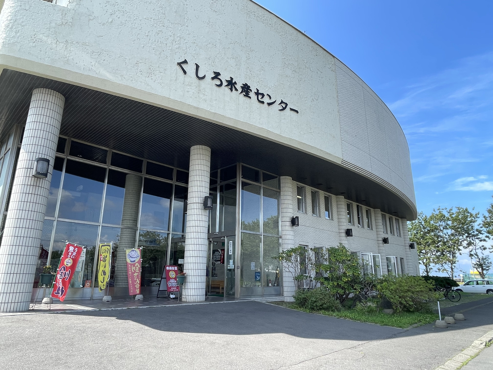
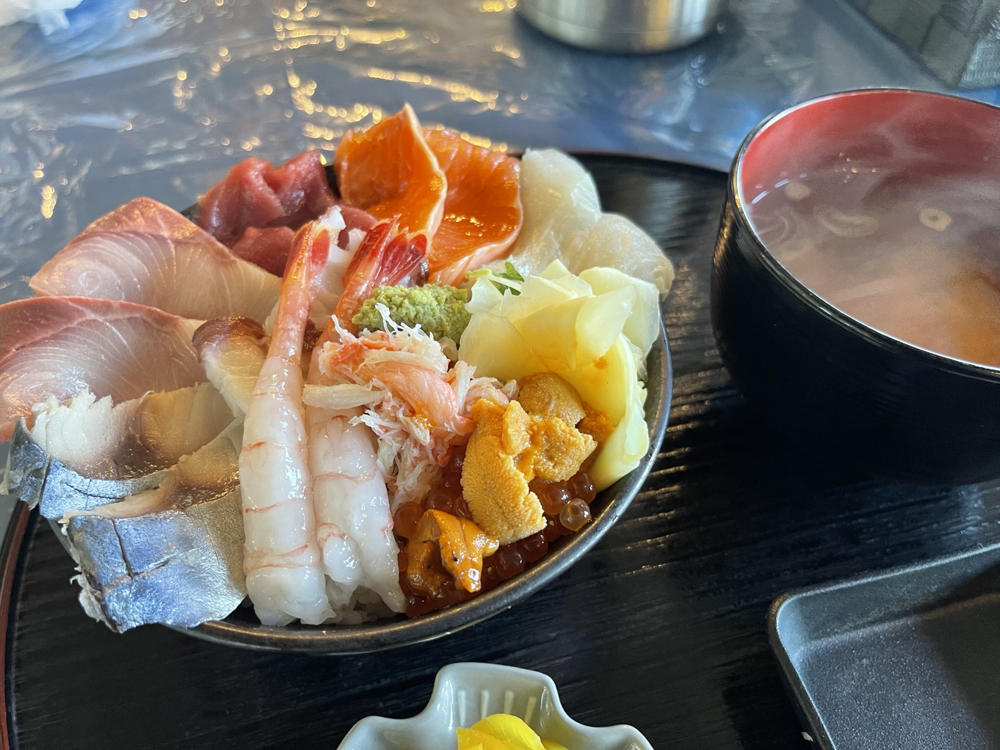
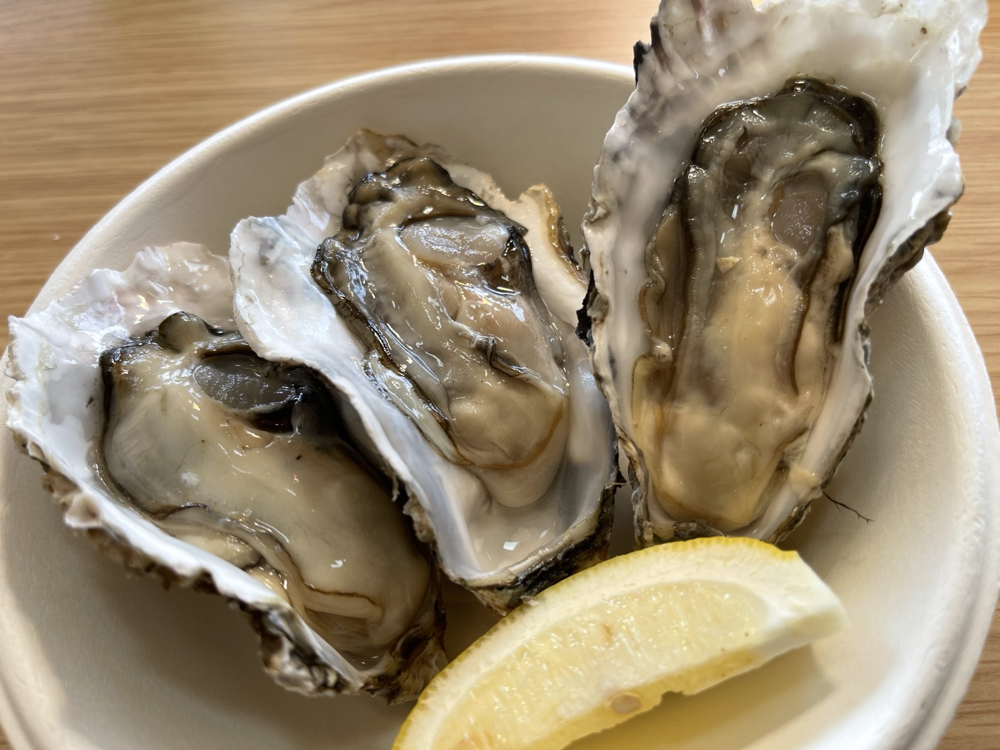
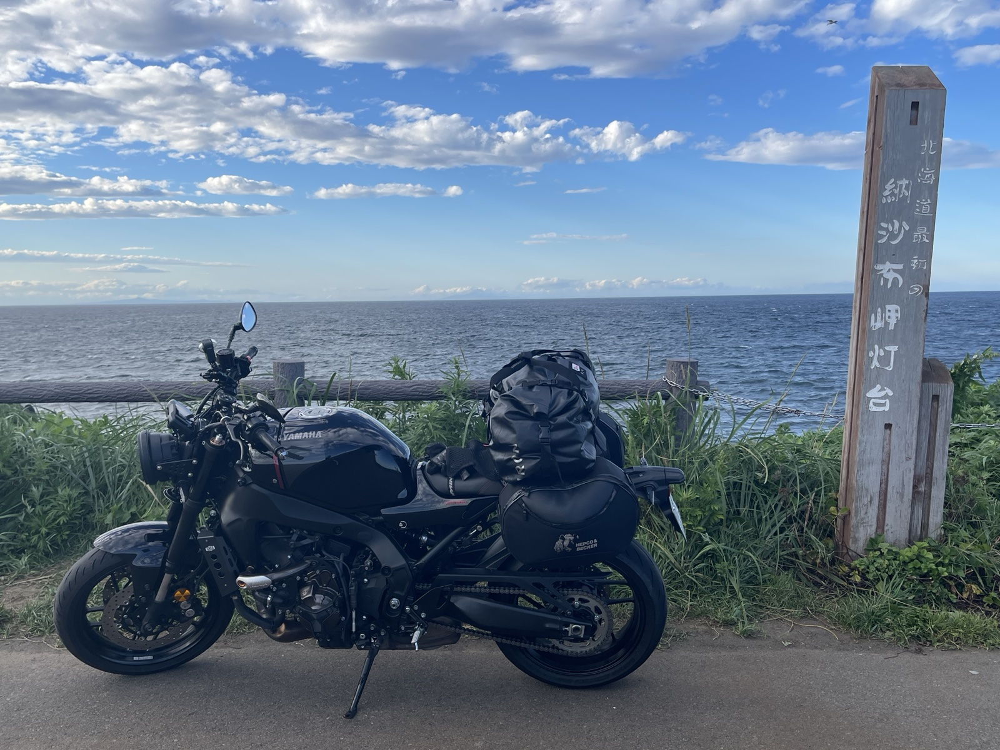
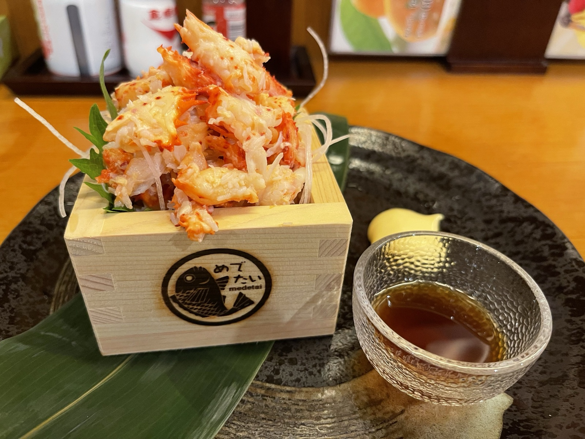

帯広を出発し、釧路を経由して根室を目指す。道東を東へ東へと走る日だ。国道38号線沿いの景色は平原と牧草地が続き、速度を上げるとXSR900の3気筒がよく回る。
釧路 — 釧ちゃん食堂（くしろ水産センター内）
釧路市内で立ち寄ったのがくしろ水産センター。釧路の海産物が揃うマーケットで、市内観光の定番スポットでもある。朝から走り続けた後なので、まずは施設内の釧ちゃん食堂で腹ごしらえをすることにした。


厚岸 — 偶然見つけた蒸留所と牡蠣
釧路から根室へ向かう途中、厚岸町に立ち寄ることにした。特に目的はなかったのだが、これが大当たりだった。
厚岸はウイスキー蒸留所があることで知られている。厚岸蒸留所は国産ウイスキーブームの中でも注目度の高い蒸留所で、霧多布湿原の近くに位置している。ツーリング中に偶然気づいて「こんなところにあったのか」と驚いた🥃
そして厚岸といえば牡蠣。北海道随一の牡蠣の産地で、年間を通じて生牡蠣が食べられる。道の駅「コンキリエ」で食べた生牡蠣は、身が大きくて海の味が濃かった。

納沙布岬灯台 — 夕暮れの最東端
厚岸を出てさらに東へ。根室市内を通り抜け、まずは納沙布岬まで足を延ばした。日本本土の最東端にある岬で、対岸には北方領土が見える。日が傾く前に灯台だけでも見ておきたかった。

水平線のすぐ向こうに、島の稜線が見えた。歯舞群島だ。あそこは日本の領土なのに、自由に行けない。距離は数キロしかないのに——岬の前に立つと、教科書で読んだ「北方領土」が急に身近な話になる。資料館は明日の朝に回すことにして、根室市内へ戻る。
根室 — 蟹
市街に戻ったのは夕方だった。根室は日本最東端の市で、夕食には根室名物の蟹を狙う。

木箱に盛られた「めでたい」の蟹は身がぎっしりで甘みが強い。明日は朝もう一度納沙布岬周辺に戻って北方領土資料館に立ち寄り、それから知床方面へ向かう。